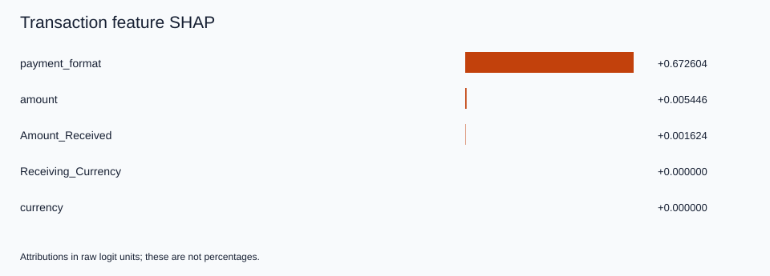
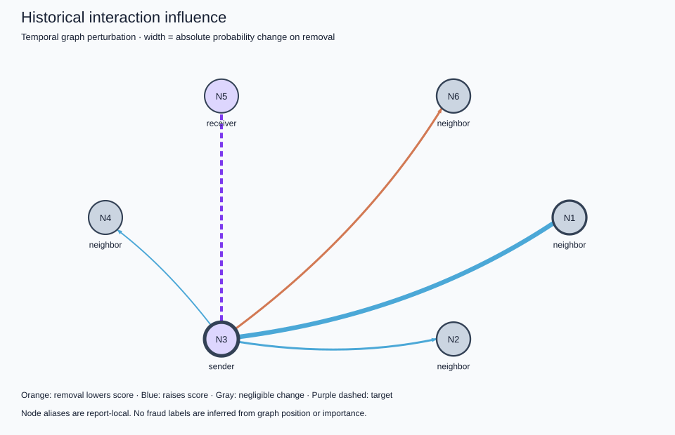

============================================================
TRANSACTION XAI
============================================================
Transaction: 3717744
Bank: Citi
MODEL PREDICTION
Fraud model score (uncalibrated): 0.537519707
Prediction: FRAUD (threshold 0.512018960)
PREDICTION PARITY
Existing evaluation: 0.537519693
XAI: 0.537519707
FEATURE CONTRIBUTIONS (raw logit units)
1. payment_format = ACH +0.672604
2. amount = 10541.87 +0.005446
3. Amount_Received = 10541.87 +0.001624
4. Receiving_Currency = USD +0.000000
5. currency = USD +0.000000
TEMPORAL EVIDENCE
Recent completed batches examined: 8
Events involving sender/receiver in that window: 4
Time since sender's last recorded event: 243408.0 seconds
Time since receiver's last recorded event: 7956553.1875 seconds
Window volume by currency: {'USD': 7131.91}
IMPORTANT HISTORICAL INTERACTIONS
Event 3655108: delta probability on removal = +0.005440593
Event 3559901: delta probability on removal = -0.001652989
Event 3541852: delta probability on removal = +0.001615785
Event 3541849: delta probability on removal = +0.000460258
GRAPH EVIDENCE
Evaluated historical edges: 4
Nodes represented, including target endpoints: 6
Method: temporal graph perturbation (not GNNExplainer)
INTERPRETATION
payment_format contributed positively relative to the sampled training reference, with account memory fixed.
amount contributed positively relative to the sampled training reference, with account memory fixed.
Amount_Received contributed positively relative to the sampled training reference, with account memory fixed.
Suppressing the most influential tested historical event changed the score by +0.005440593.
Temporal counts and volumes describe observed history; they are not independently attributed model features.
This explanation describes model behavior and does not establish that the transaction is actually fraudulent.
FIDELITY / STABILITY
Retained-window-subgraph absolute score error: 0.000460288
Background-resampling top-feature Jaccard: 1.0
LIMITATIONS
Model explanations do not establish fraud or causality; scores are uncalibrated.
Feature SHAP holds account memory fixed; static node-feature attribution is not implemented.
Temporal graph perturbation is a bounded replay intervention, not GNNExplainer. Earlier anchor memory remains intact.
Interventional SHAP hybrids can be unrealistic for correlated fields; exactness is relative to the sampled background.
Legacy preprocessing reproduces current original evaluation and saved metrics; original fitted objects were not preserved.
The original fixed-size batching and timestamp-tie behavior are preserved.
No combined federated-continual checkpoint or formal differential privacy is implemented.
============================================================